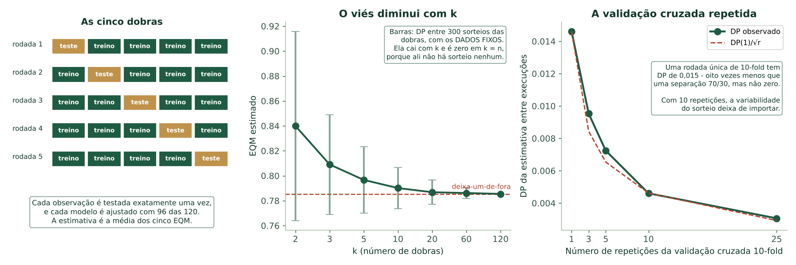
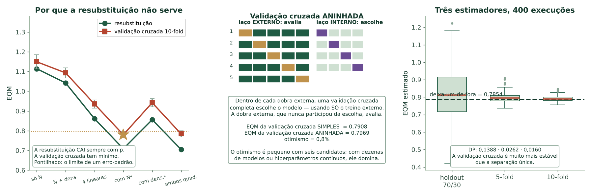

Validação cruzada k-fold
Divide as observações em k partes e usa cada uma como teste exatamente uma vez, estimando o erro de predição com todos os dados.
Comece por aqui
A separação treino-teste desperdiça dados — 30% deles não participam do ajuste — e devolve um número que depende do sorteio. A validação cruzada resolve os dois problemas de uma vez: divide as observações em \(k\) partes, usa cada uma como teste exatamente uma vez, e tira a média.
Nos dados desta ficha, uma separação 70/30 tem coeficiente de variação de 17,3% entre sorteios; uma rodada de 10-fold tem 1,97%. É uma redução de quase nove vezes na variabilidade devida ao sorteio — e ainda assim a validação cruzada repetida melhora mais.
O que é a validação cruzada
Sorteiam-se as \(n\) observações em \(k\) dobras de tamanho aproximadamente igual. Para cada dobra \(j\), ajusta-se o modelo com as outras \(k-1\) e prediz-se a dobra \(j\). Ao fim, cada observação foi predita exatamente uma vez, por um modelo que não a viu, e a média dos \(n\) erros é a estimativa.

Uma é o sorteio das dobras, com os dados fixos: ela cai com \(k\) e é zero na deixa-um-de-fora, que não sorteia nada. A outra é a variabilidade entre amostras da mesma população: é essa que a afirmação clássica "a deixa-um-de-fora tem variância alta" descreve, e a ficha correspondente a examina em separado. As barras de erro desta ficha medem a primeira.
Pressupostos e como verificá-los
| Pressuposto | Por que importa | Como verificar |
|---|---|---|
| Observações independentes | O sorteio das dobras só é válido assim. | Delineamento; com dados agrupados, use groupKFold. |
| Todo o pré-processamento dentro do laço | Padronizar ou selecionar fora dele vaza informação. | Use recipes ou caret, que o garantem. |
| Seleção de modelo dentro do laço | Escolher e avaliar na mesma validação é otimista. | Validação cruzada aninhada. |
| Dobras de tamanho parecido | Dobras muito desiguais desequilibram a média. | sample(rep(1:k, length.out = n)). |
| Estratificação com classes raras | Uma dobra pode ficar sem casos. | createFolds estratifica por padrão. |
| Dados permutáveis | Com séries temporais, as dobras não podem ser sorteadas. | Use janelas deslizantes. |
| Custo computacional aceitável | São k ajustes por modelo comparado. | Com modelos lineares, o atalho da deixa-um-de-fora é gratuito. |
Selecionar as variáveis mais correlacionadas com a resposta usando o conjunto inteiro, e só então rodar a validação cruzada sobre o modelo escolhido, é um erro que produz estimativas espetacularmente otimistas — e aparece com frequência na literatura aplicada. A seleção é parte do procedimento de ajuste e tem de ser refeita dentro de cada dobra. O mesmo vale para a escolha de hiperparâmetros, para a imputação e para a padronização.
Formulação e cálculo
em que \(\kappa(i)\) é a dobra a que pertence a observação \(i\) e \(\hat f^{-j}\) é o modelo ajustado sem a dobra \(j\).
Em que:
- \(k\)
- número de dobras
- \(n_j\)
- tamanho da dobra \(j\)
- \(L\)
- função de perda
- \(\hat f^{-j}\)
- modelo ajustado sem a dobra \(j\)
- \(r\)
- número de repetições da validação cruzada completa
Exemplo numérico, passo a passo
| Dobra | n de teste | n de treino | EQM da dobra |
|---|---|---|---|
| 1 | 24 | 96 | 0,7672 |
| 2 | 24 | 96 | 0,9001 |
| 3 | 24 | 96 | 0,9490 |
| 4 | 24 | 96 | 0,4102 |
| 5 | 24 | 96 | 0,9368 |
| Média | — | — | 0,7927 |
Cada uma das 120 observações foi predita exatamente uma vez, por um modelo ajustado com as outras 96. A média dos 120 erros quadráticos é 0,7927.
Para comparar, o EQM de resubstituição — calculado nos próprios dados de ajuste — é 0,7051, cerca de 11% menor. A diferença é o otimismo que a validação cruzada corrige.
A variação entre as cinco dobras é grande: de 0,41 a 0,95. Isso não é um defeito do método, é o ruído de estimar um erro com 24 observações. O erro-padrão da estimativa, calculado entre as dobras, é 0,0194 para este modelo.
A escolha de k
| k | n de treino por dobra | EQM médio | DP entre sorteios | Ajustes |
|---|---|---|---|---|
| 2 | 60 | 0,8372 | 0,0707 | 2 |
| 3 | 80 | 0,8116 | 0,0440 | 3 |
| 5 | 96 | 0,7993 | 0,0249 | 5 |
| 10 | 108 | 0,7902 | 0,0159 | 10 |
| 20 | 114 | 0,7873 | 0,0094 | 20 |
| 60 | 118 | 0,7863 | 0,0045 | 60 |
| 120 | 119 | 0,7854 | 0,0000 | 120 |
Propriedades
- Com \(k=n\) reduz-se à deixa-um-de-fora; com \(k=2\), a uma separação metade a metade feita duas vezes.
- É viesada para cima em relação ao erro do modelo ajustado com todas as \(n\) observações, e o viés diminui com \(k\).
- A variabilidade devida ao sorteio das dobras cai com \(k\), e é eliminada pela repetição.
- O custo é \(k\) ajustes por modelo avaliado; com modelos lineares há atalho exato para \(k=n\).
- Os \(n\) erros não são independentes entre si: os modelos das dobras compartilham a maior parte dos dados.
- Para modelos lineares, é assintoticamente equivalente ao AIC quando \(k=n\) (Stone, 1977).
- Usar a mesma validação cruzada para selecionar e para estimar produz viés otimista; a versão aninhada o corrige.
Como interpretar os resultados
| Elemento | O que informa | Cuidado |
|---|---|---|
| EQM ou RMSE médio | A estimativa do erro. | Viesada para cima; o viés cai com k. |
| DP entre as dobras | A variabilidade da estimativa. | Divida por √k para o erro-padrão. |
| EQM de cada dobra | Se alguma dobra destoa. | Dobra muito pior pode indicar heterogeneidade. |
| Comparação com a resubstituição | O otimismo do ajuste. | Diferença grande sugere sobreajuste. |
| Número de repetições | A estabilidade do resultado. | Com r = 1, ainda há variabilidade do sorteio. |
| Resultado da versão aninhada | A estimativa honesta com seleção. | É maior que a da versão simples. |
A regra de um erro-padrão
Proposta por Breiman e colaboradores no contexto de árvores, a regra diz: entre os modelos cujo erro de validação cruzada não excede o menor erro mais um erro-padrão, escolha o mais simples. A justificativa é que diferenças dentro do ruído da própria estimativa não são evidência de superioridade, e a parcimônia é um critério de desempate defensável.
O menor EQM é o do modelo com N², 0,7856, com erro-padrão entre dobras de 0,0194. O limite é 0,8051, e dois modelos ficam abaixo dele: o com N² (p = 6) e o com os dois quadráticos (p = 7). A regra escolhe o primeiro. Note que o erro-padrão a usar é o calculado entre as dobras, e não entre repetições — este último mede apenas o ruído de Monte Carlo e é artificialmente pequeno.
Como executar no R e em Python
Onde executar o código em Python
Não é preciso instalar nada: o Google Colab é um computador na nuvem, gratuito, que executa Python pelo navegador e já traz as bibliotecas usadas aqui (numpy, scipy e matplotlib).
Três caminhos. boot::cv.glm(dados, modelo, K = 10) é o mais direto para GLM, e devolve a estimativa bruta e uma versão com correção de viés. caret::train() com trainControl(method = "cv") ou "repeatedcv" cobre centenas de modelos com a mesma interface e garante que o pré-processamento fique dentro do laço. O ecossistema tidymodels (rsample, recipes, tune) é a alternativa moderna, com nested_cv() para a versão aninhada. Para dados agrupados, caret::groupKFold(); para séries temporais, method = "timeslice".
library(caret)
ctrl <- trainControl(method = "repeatedcv", number = 10, repeats = 20)
train(f_completo, data = milho, method = "lm", trControl = ctrl)
Exemplo de aplicação
Contexto dos dados
Os dados são fictícios e foram criados pelo autor: 120 talhões de milho, com a produtividade em t/ha e quatro variáveis explicativas — dose de nitrogênio (kg/ha), densidade de plantio (mil plantas/ha), matéria orgânica do solo (%) e precipitação no ciclo (mm). O processo gerador tem resposta quadrática ao nitrogênio e à densidade, e um erro de desvio-padrão 0,85 t/ha. O mesmo conjunto atravessa as fichas de avaliação de modelos, de modo que as estimativas de erro produzidas por cada método podem ser comparadas diretamente.
Código em R
# Validação cruzada k-fold: exemplo completo ----
# Pacotes: caret, boot (cv.glm), rsample/tune (tidymodels)
# install.packages(c("caret", "boot"))
# Dados fictícios: 120 talhões de milho. Produtividade (t/ha) em função da
# dose de nitrogênio, densidade de plantio, matéria orgânica e precipitação.
# O arquivo scripts/milho.csv acompanha o repositório.
milho <- read.csv("milho.csv")
str(milho); summary(milho$y)
colMeans(milho)
# O modelo usado em todas as fichas deste grupo
f_completo <- y ~ N + I(N^2) + densidade + I(densidade^2) + mo + chuva
eqm <- function(obs, prev) mean((obs - prev)^2)
n <- nrow(milho)
# ---- A conta, à mão, com k = 5
set.seed(0)
k <- 5
dobra <- sample(rep(1:k, length.out = n))
erros <- numeric(n)
for (j in 1:k) {
mm <- lm(f_completo, data = milho[dobra != j, ])
erros[dobra == j] <- (milho$y[dobra == j] -
predict(mm, newdata = milho[dobra == j, ]))^2
}
tapply(erros, dobra, mean) # EQM de cada dobra
mean(erros) # a estimativa
eqm(milho$y, predict(lm(f_completo, data = milho))) # resubstituição
# ---- Com o pacote boot
library(boot)
g <- glm(f_completo, data = milho)
cv.glm(milho, g, K = 5)$delta # [1] bruto, [2] com correção de viés
cv.glm(milho, g, K = 10)$delta
cv.glm(milho, g)$delta # K = n: deixa-um-de-fora
# ---- Com o caret, que é o caminho usual
library(caret)
set.seed(4)
ctrl <- trainControl(method = "cv", number = 10)
train(f_completo, data = milho, method = "lm", trControl = ctrl)
# Validação cruzada REPETIDA: elimina a variabilidade do sorteio
ctrl_r <- trainControl(method = "repeatedcv", number = 10, repeats = 20)
train(f_completo, data = milho, method = "lm", trControl = ctrl_r)
# ---- A escolha de k
for (k in c(2, 3, 5, 10, 20, 60, n)) {
v <- replicate(if (k < n) 200 else 1, {
d <- sample(rep(1:k, length.out = n)); e <- numeric(n)
for (j in 1:k) {
mm <- lm(f_completo, data = milho[d != j, ])
e[d == j] <- (milho$y[d == j] - predict(mm, newdata = milho[d == j, ]))^2
}
mean(e) })
cat(sprintf("k = %3d: EQM %.4f, DP entre sorteios %.4f\n", k, mean(v), sd(v)))
}
# ---- Comparando os seis modelos candidatos
cands <- list("so N" = y ~ N,
"N+dens" = y ~ N + densidade,
"4 lineares"= y ~ N + densidade + mo + chuva,
"com N2" = y ~ N + I(N^2) + densidade + mo + chuva,
"com dens2" = y ~ N + densidade + I(densidade^2) + mo + chuva,
"ambos" = f_completo)
set.seed(4)
ctrl <- trainControl(method = "repeatedcv", number = 10, repeats = 20)
res <- lapply(cands, function(f) train(f, data = milho, method = "lm",
trControl = ctrl))
sapply(res, function(m) c(RMSE = m$results$RMSE, EQM = m$results$RMSE^2,
SD = m$results$RMSESD))
# Regra de UM ERRO-PADRÃO: entre os modelos cujo EQM não excede
# (menor EQM + 1 erro-padrão), escolha o mais simples.
# ---- Validação cruzada ANINHADA (seleção DENTRO do laço)
set.seed(31)
kext <- 5; dext <- sample(rep(1:kext, length.out = n)); erros <- numeric(n)
for (j in 1:kext) {
tr <- milho[dext != j, ]; te <- milho[dext == j, ]
# laço INTERNO: escolhe o modelo usando SÓ o treino externo
eint <- sapply(cands, function(f) {
gg <- glm(f, data = tr); cv.glm(tr, gg, K = 5)$delta[1] })
melhor <- cands[[which.min(eint)]]
mm <- lm(melhor, data = tr)
erros[dext == j] <- (te$y - predict(mm, newdata = te))^2
}
mean(erros) # estimativa HONESTA, que inclui o custo da seleção
# ---- Séries temporais e dados agrupados pedem outros esquemas
# trainControl(method = "timeslice", initialWindow = 60, horizon = 12)
# groupKFold(milho$fazenda, k = 5)
A mesma análise em Python, com os resultados
Cole o código em um notebook do Google Colab ↗ e execute com Shift+Enter. Os valores abaixo são a saída desse código.
# Bibliotecas: numpy e scipy (ambas já instaladas no Google Colab)
import numpy as np
from scipy import stats
# ===================================================================
# Dados fictícios, criados pelo autor, compartilhados pelas fichas de
# avaliação de modelos: 120 talhões de milho, com a produtividade (t/ha)
# e quatro variáveis: dose de nitrogênio (kg/ha), densidade de plantio
# (mil plantas/ha), matéria orgânica do solo (%) e precipitação no ciclo (mm).
# Colunas: y, N, densidade, materia_organica, chuva
# ===================================================================
MILHO = np.array([
[7.65,40,56.3,1.86,572], [9.35,200,65.2,3.67,736], [6.8,160,71.1,2.46,372], [7.52,80,62.6,3.54,340],
[6.39,0,64,3.17,528], [8.54,160,58.2,2.81,433], [9.29,80,60.3,3.48,530], [6.85,120,59.8,2.58,375],
[8.76,120,60,3.54,532], [8,40,57.8,1.87,638], [5.86,80,64.8,2.27,620], [9.23,200,71.1,3.65,421],
[7.37,160,55.4,1.32,492], [8.55,200,71.8,3.13,600], [5.73,0,59.2,2.51,684], [6.3,80,59.4,2.41,434],
[5.66,0,46.9,2.31,443], [10.2,200,45,3.7,621], [8.84,120,67.1,1.72,488], [7.22,40,54.4,3.38,428],
[8.62,160,67.6,3.13,615], [8.97,160,62.4,2.5,369], [5.58,40,63.8,2.74,458], [8.52,160,71.3,3.29,607],
[6.97,0,61.5,2.38,463], [7.8,80,39.1,1.73,589], [8.8,120,49.8,3,410], [6.51,0,68.8,2.21,590],
[8.1,160,76,2.51,562], [10.13,200,61.3,2.84,666], [8.7,160,57.1,3.32,498], [9.12,120,52.3,4.07,488],
[9.21,200,65.8,3.04,511], [9.56,80,49.4,2.88,614], [7.59,80,53.3,3.37,453], [9,80,63,3,507],
[7.84,80,62.7,1.62,695], [7.23,120,60.2,2.38,590], [5.79,80,69.4,1.93,585], [7.6,80,53.3,3.29,473],
[10.46,120,53.7,3.69,597], [8.81,120,59.1,3.05,415], [6.29,0,62.5,2.08,386], [8.3,80,59.6,3.36,435],
[8.54,80,75.9,2.13,648], [6.05,0,57.8,2.98,535], [3.93,0,66.4,1.96,436], [6.95,40,57.9,1.83,488],
[5.84,40,64.2,1.82,561], [8.31,200,58.9,2.81,626], [7.77,200,59.2,2.34,373], [8.83,160,73.4,3.11,640],
[7.99,80,59.6,1.89,604], [9.28,160,74,3.14,457], [9.28,160,56.8,2.37,484], [10.55,80,58.7,3.68,564],
[6.44,80,69.8,3.51,494], [8.6,200,44.6,2.65,532], [9.92,80,50.3,2.88,425], [8.44,200,62.1,2.97,356],
[7.78,80,65.3,3.12,739], [6.18,40,66,2.61,535], [8.88,200,59.7,3.57,540], [8.22,120,51.9,2.44,566],
[9.58,120,67.8,1.45,640], [8.23,200,65.1,2.97,604], [4.71,0,54,2.72,427], [10.63,160,62.6,3.38,510],
[6.94,40,74.7,3.22,526], [8.58,80,62.9,2.89,589], [8.7,200,53.6,2.88,466], [9.05,80,59,2.89,554],
[5.96,40,59.4,2.34,540], [9.37,120,64.4,1.95,644], [7.89,160,68.4,2.23,285], [9,200,55.3,2.74,527],
[4.34,0,57.4,1.21,551], [9.67,160,69.2,2.49,581], [8.81,160,67.2,2.11,519], [7.04,80,71.6,2.74,445],
[6.92,40,51.6,2.23,580], [7.32,80,55.2,2.84,553], [7.51,40,69.1,2.64,444], [7.03,0,55.2,3.71,397],
[7.94,40,64.3,2.56,570], [7.95,80,61.6,2.63,442], [9.43,120,56.7,2.82,578], [5.06,40,72.4,1.53,656],
[6.3,40,61.9,2.05,539], [6.17,0,58.4,3.81,541], [8.22,80,60.8,3.16,531], [6.58,0,63.7,2.86,645],
[7.46,40,50.8,3.56,646], [6.37,40,55.8,2.67,528], [6.78,0,52.9,2.63,587], [8.54,160,47,2.59,524],
[3.94,0,68.9,1.56,475], [5.5,40,72.2,3.46,589], [6.46,80,70.4,2.67,512], [8.17,120,49.4,2.73,444],
[8.73,200,64.8,2.57,385], [7.1,120,66.8,2.36,609], [5.78,40,57.9,1.22,433], [8.98,200,67.8,2.91,420],
[9.57,160,54,4.33,496], [8.76,80,54.3,3.49,587], [8.66,80,56,2.6,365], [8.29,160,56.8,2.15,577],
[4.35,0,54.8,2.82,555], [4.89,0,68.8,3.06,411], [4.53,0,54.4,2.72,417], [9.05,120,58.7,3.38,504],
[8.82,80,57.4,2.13,694], [9.44,200,77.6,3.55,497], [9.43,120,55.6,2.91,618], [6.77,0,65.3,2.42,605],
[8.24,200,74.9,2.6,377], [10.17,200,53.6,3.04,520], [7.96,40,56.1,3.33,609], [5.79,0,59.6,2.85,475]])
y = MILHO[:, 0]; Xv = MILHO[:, 1:]
nomes = ["nitrogênio", "densidade", "mat. orgânica", "chuva"]
n = len(y)
def monta(X, grau_n=1, grau_d=1):
"""Matriz de delineamento: intercepto, as quatro variáveis e termos
quadráticos opcionais para nitrogênio e densidade."""
cols = [np.ones(len(X))] + [X[:, j] for j in range(4)]
if grau_n >= 2: cols.append(X[:, 0]**2)
if grau_d >= 2: cols.append(X[:, 1]**2)
return np.column_stack(cols)
def ajusta(Xd, yy):
return np.linalg.lstsq(Xd, yy, rcond=None)[0]
def eqm(obs, prev):
return float(np.mean((obs - prev)**2))
def cv_k(Xd, yy, k, semente=0, repeticoes=1, por_dobra=False):
"""Validação cruzada k-fold. Devolve o EQM de cada repetição."""
nn = len(yy); rng = np.random.default_rng(semente); out = []; pd_ = []
for _ in range(repeticoes):
ordem = rng.permutation(nn)
dobras = np.array_split(ordem, k)
erros = np.empty(nn); md = []
for d in dobras:
m = np.ones(nn, bool); m[d] = False
b = ajusta(Xd[m], yy[m])
erros[d] = (yy[d] - Xd[d] @ b)**2
md.append(erros[d].mean())
out.append(erros.mean()); pd_.append(md)
return (np.array(out), np.array(pd_)) if por_dobra else np.array(out)
# ===================================================================
# PARTE 1 - como funciona, e o que ela entrega
# ===================================================================
print(f"{n} talhões de milho. Modelo com as quatro variáveis e os dois")
print("termos quadráticos (p = 7 parâmetros).")
Xd = monta(Xv, 2, 2)
rng = np.random.default_rng(0)
ordem = rng.permutation(n); dobras = np.array_split(ordem, 5)
print(f"\nValidação cruzada com k = 5: as {n} observações são divididas em")
print("cinco dobras, e cada uma serve de teste uma vez.")
print(f"\n{'dobra':>7}{'n teste':>10}{'n treino':>11}{'EQM da dobra':>15}")
tot = np.empty(n)
for i, d in enumerate(dobras):
m = np.ones(n, bool); m[d] = False
b = ajusta(Xd[m], y[m]); e = (y[d] - Xd[d] @ b)**2
tot[d] = e
print(f"{i+1:>7}{len(d):>10}{int(m.sum()):>11}{e.mean():>15.4f}")
print(f"{'média':>7}{'':>10}{'':>11}{tot.mean():>15.4f}")
print("\nTodas as 120 observações foram testadas exatamente uma vez, e cada")
print("modelo foi ajustado com 96 delas. A média dos erros é a estimativa.")
print(f"\nPara comparar: o EQM de RESUBSTITUIÇÃO, calculado nos próprios dados")
b_full = ajusta(Xd, y)
print(f"de ajuste, é {eqm(y, Xd@b_full):.4f} - cerca de "
f"{100*(1-eqm(y, Xd@b_full)/tot.mean()):.0f}% menor que o da validação cruzada.")
# ===================================================================
# PARTE 2 - a escolha de k
# ===================================================================
print("\n" + "=" * 70)
print("Qual k usar? Cada valor é um compromisso entre viés, variância e custo.")
print("A simulação repete cada k 500 vezes, com sorteios diferentes das dobras.")
print(f"\n{'k':>5}{'n de treino':>13}{'EQM médio':>12}{'DP entre':>11}"
f"{'ajustes':>10}")
print(f"{'':>5}{'por dobra':>13}{'':>12}{'sorteios':>11}{'':>10}")
for k in [2, 3, 5, 10, 20, 60, 120]:
v = cv_k(Xd, y, k, semente=k, repeticoes=(500 if k < 120 else 1))
ntr_ = n - n//k
dp = v.std(ddof=1) if len(v) > 1 else 0.0
print(f"{k:>5}{ntr_:>13}{v.mean():>12.4f}{dp:>11.4f}{k:>10}")
print("\nCom k pequeno, cada modelo é ajustado com menos dados e o erro é")
print("SUPERESTIMADO: k = 2 treina com 60 observações e devolve 0,8372 contra")
print("0,7854 de k = 120. É o viés, e ele desaparece à medida que k cresce.")
print("\nA coluna do DP merece cuidado, porque ela mede UMA das duas fontes de")
print("variância, e não a que a literatura costuma discutir. Aqui os dados são")
print("FIXOS e só o sorteio das dobras muda: essa variabilidade cai com k, e é")
print("zero para k = n, porque a deixa-um-de-fora não tem sorteio nenhum.")
print("A afirmação clássica de que a deixa-um-de-fora tem variância ALTA refere-se")
print("à outra fonte - a variabilidade da estimativa entre AMOSTRAS diferentes da")
print("mesma população -, e a ficha da deixa-um-de-fora a examina em separado.")
print("\nA recomendação usual de k = 5 ou k = 10 é um compromisso entre viés e")
print("custo computacional, e nestes dados os dois dão praticamente o mesmo.")
# ===================================================================
# PARTE 3 - validação cruzada REPETIDA
# ===================================================================
print("\n" + "=" * 70)
print("Uma única rodada de 10-fold ainda depende do sorteio das dobras.")
v10 = cv_k(Xd, y, 10, semente=99, repeticoes=1000)
print(f"\n1.000 rodadas independentes de 10-fold nos mesmos dados:")
print(f" média {v10.mean():.4f} | DP {v10.std(ddof=1):.4f}")
print(f" mínimo {v10.min():.4f} | máximo {v10.max():.4f} "
f"| amplitude {v10.max()-v10.min():.4f}")
print(f" coeficiente de variação {100*v10.std(ddof=1)/v10.mean():.2f}%")
print("\nCompare com a separação única 70/30 da ficha do holdout, cujo EQM")
print("variou de 0,37 a 1,34 (CV de 17%). A validação cruzada reduz a")
print("variabilidade do sorteio por um fator de oito, mas não a elimina.")
print("\nA validação cruzada REPETIDA é a solução: rode r vezes e tire a média.")
print(f"\n{'repetições':>12}{'DP da estimativa':>20}{'redução':>12}")
rng2 = np.random.default_rng(55); dps = []
for r in [1, 3, 5, 10, 25]:
medias = [cv_k(Xd, y, 10, semente=int(rng2.integers(1e6)),
repeticoes=r).mean() for _ in range(300)]
dps.append(np.std(medias, ddof=1))
for r, d in zip([1, 3, 5, 10, 25], dps):
print(f"{r:>12}{d:>20.4f}{d/dps[0]:>12.2f}")
print("A redução segue a raiz de r, como qualquer média. Com 10 repetições, a")
print("variabilidade do sorteio deixa de ser relevante diante do erro amostral.")
# ===================================================================
# PARTE 4 - a seleção de modelo, feita direito
# ===================================================================
print("\n" + "=" * 70)
print("Comparando os seis modelos candidatos por 10-fold repetida 20 vezes")
modelos = [("só nitrogênio", lambda X: np.column_stack([np.ones(len(X)), X[:,0]])),
("N + densidade", lambda X: np.column_stack([np.ones(len(X)), X[:,0], X[:,1]])),
("as quatro, linear", lambda X: monta(X, 1, 1)),
("com N²", lambda X: monta(X, 2, 1)),
("com densidade²", lambda X: monta(X, 1, 2)),
("com os dois quadráticos", lambda X: monta(X, 2, 2))]
print("(o erro-padrão é calculado ENTRE AS DOBRAS, que é o que a regra de um")
print(" erro-padrão usa - e não entre as repetições)")
print(f"\n{'modelo':<26}{'p':>4}{'resubstituição':>16}{'EQM 10-fold':>14}"
f"{'EP':>9}")
res = []
for rot, f in modelos:
Xm = f(Xv)
v, pd_ = cv_k(Xm, y, 10, semente=4, repeticoes=20, por_dobra=True)
# erro-padrão ENTRE DOBRAS, que é o usado na regra de um erro-padrão
ep = pd_.mean(axis=0).std(ddof=1)/np.sqrt(10)
bb = ajusta(Xm, y)
res.append((rot, Xm.shape[1], v.mean(), ep))
print(f"{rot:<26}{Xm.shape[1]:>4}{eqm(y, Xm@bb):>16.4f}{v.mean():>14.4f}"
f"{ep:>9.4f}")
j = int(np.argmin([r[2] for r in res]))
print(f"\nMenor EQM de validação cruzada: '{res[j][0]}' com {res[j][2]:.4f}.")
print("Note que o EQM de resubstituição cai monotonicamente com p - ele sempre")
print("cai - enquanto o da validação cruzada tem um mínimo. É essa diferença")
print("que torna a validação cruzada útil para selecionar modelos.")
# a regra de um erro-padrão
lim = res[j][2] + res[j][3]
simples = [r for r in res if r[2] <= lim]
js = min(simples, key=lambda r: r[1])
print(f"\nRegra de UM ERRO-PADRÃO: entre os modelos cujo EQM não excede")
print(f"{res[j][2]:.4f} + {res[j][3]:.4f} = {lim:.4f}, escolha o mais simples.")
print(f" modelos elegíveis: " + ", ".join(f"{r[0]} (p={r[1]})" for r in simples))
print(f" escolhido: '{js[0]}', com p = {js[1]}")
print("A regra privilegia a parcimônia quando a diferença de desempenho está")
print("dentro do ruído da própria estimativa.")
# ===================================================================
# PARTE 5 - o erro mais caro: selecionar e avaliar na MESMA validação
# ===================================================================
print("\n" + "=" * 70)
print("Se a mesma validação cruzada escolhe o modelo E estima o erro, a")
print("estimativa fica otimista. A solução é a validação cruzada ANINHADA:")
print("um laço interno escolhe, um laço externo avalia.")
def cv_simples(Xlist, yy, k=5, semente=0):
"""Escolhe o modelo e devolve o MENOR EQM - o procedimento errado."""
e = [cv_k(Xm, yy, k, semente)[0] for Xm in Xlist]
return min(e), int(np.argmin(e))
def cv_aninhada(flist, Xraw, yy, kext=5, kint=5, semente=0):
nn = len(yy); rng = np.random.default_rng(semente)
dob = np.array_split(rng.permutation(nn), kext)
erros = np.empty(nn)
for d in dob:
m = np.ones(nn, bool); m[d] = False
# laço INTERNO: escolhe o modelo usando só o treino externo
eint = [cv_k(f(Xraw[m]), yy[m], kint, semente+1)[0] for f in flist]
jbest = int(np.argmin(eint))
Xb = flist[jbest](Xraw)
b = ajusta(Xb[m], yy[m])
erros[d] = (yy[d] - Xb[d] @ b)**2
return erros.mean()
flist = [f for _, f in modelos]
rng = np.random.default_rng(31)
a_err, b_err = [], []
for _ in range(300):
s = int(rng.integers(1e6))
Xl = [f(Xv) for f in flist]
e_sel, _ = cv_simples(Xl, y, 5, s)
a_err.append(e_sel)
b_err.append(cv_aninhada(flist, Xv, y, 5, 5, s))
a_err = np.array(a_err); b_err = np.array(b_err)
print(f"\n300 repetições, com 5 dobras externas e 5 internas:")
print(f" EQM da validação cruzada SIMPLES (seleciona e avalia) = {a_err.mean():.4f}")
print(f" EQM da validação cruzada ANINHADA (separa as duas) = {b_err.mean():.4f}")
print(f" otimismo = {b_err.mean()-a_err.mean():.4f} "
f"({100*(b_err.mean()/a_err.mean()-1):.1f}%)")
print("\nO otimismo é modesto aqui porque há apenas seis candidatos e um deles")
print("é claramente melhor. Com dezenas de modelos, ou com ajuste fino de")
print("hiperparâmetros contínuos, ele cresce e pode dominar a estimativa.")
print("Regra prática: toda escolha feita olhando os dados - variáveis,")
print("transformações, hiperparâmetros - tem de estar DENTRO do laço de")
print("validação, e não antes dele.")
Resultados da execução
120 talhões de milho. Modelo com as quatro variáveis e os dois
termos quadráticos (p = 7 parâmetros).
Validação cruzada com k = 5: as 120 observações são divididas em
cinco dobras, e cada uma serve de teste uma vez.
dobra n teste n treino EQM da dobra
1 24 96 0.7672
2 24 96 0.9001
3 24 96 0.9490
4 24 96 0.4102
5 24 96 0.9368
média 0.7927
Todas as 120 observações foram testadas exatamente uma vez, e cada
modelo foi ajustado com 96 delas. A média dos erros é a estimativa.
Para comparar: o EQM de RESUBSTITUIÇÃO, calculado nos próprios dados
de ajuste, é 0.7051 - cerca de 11% menor que o da validação cruzada.
======================================================================
Qual k usar? Cada valor é um compromisso entre viés, variância e custo.
A simulação repete cada k 500 vezes, com sorteios diferentes das dobras.
k n de treino EQM médio DP entre ajustes
por dobra sorteios
2 60 0.8372 0.0707 2
3 80 0.8116 0.0440 3
5 96 0.7993 0.0249 5
10 108 0.7902 0.0159 10
20 114 0.7873 0.0094 20
60 118 0.7863 0.0045 60
120 119 0.7854 0.0000 120
Com k pequeno, cada modelo é ajustado com menos dados e o erro é
SUPERESTIMADO: k = 2 treina com 60 observações e devolve 0,8372 contra
0,7854 de k = 120. É o viés, e ele desaparece à medida que k cresce.
A coluna do DP merece cuidado, porque ela mede UMA das duas fontes de
variância, e não a que a literatura costuma discutir. Aqui os dados são
FIXOS e só o sorteio das dobras muda: essa variabilidade cai com k, e é
zero para k = n, porque a deixa-um-de-fora não tem sorteio nenhum.
A afirmação clássica de que a deixa-um-de-fora tem variância ALTA refere-se
à outra fonte - a variabilidade da estimativa entre AMOSTRAS diferentes da
mesma população -, e a ficha da deixa-um-de-fora a examina em separado.
A recomendação usual de k = 5 ou k = 10 é um compromisso entre viés e
custo computacional, e nestes dados os dois dão praticamente o mesmo.
======================================================================
Uma única rodada de 10-fold ainda depende do sorteio das dobras.
1.000 rodadas independentes de 10-fold nos mesmos dados:
média 0.7902 | DP 0.0156
mínimo 0.7503 | máximo 0.8574 | amplitude 0.1070
coeficiente de variação 1.97%
Compare com a separação única 70/30 da ficha do holdout, cujo EQM
variou de 0,37 a 1,34 (CV de 17%). A validação cruzada reduz a
variabilidade do sorteio por um fator de oito, mas não a elimina.
A validação cruzada REPETIDA é a solução: rode r vezes e tire a média.
repetições DP da estimativa redução
1 0.0148 1.00
3 0.0090 0.61
5 0.0069 0.47
10 0.0051 0.34
25 0.0029 0.20
A redução segue a raiz de r, como qualquer média. Com 10 repetições, a
variabilidade do sorteio deixa de ser relevante diante do erro amostral.
======================================================================
Comparando os seis modelos candidatos por 10-fold repetida 20 vezes
(o erro-padrão é calculado ENTRE AS DOBRAS, que é o que a regra de um
erro-padrão usa - e não entre as repetições)
modelo p resubstituição EQM 10-fold EP
só nitrogênio 2 1.1143 1.1512 0.0376
N + densidade 3 1.0422 1.0959 0.0326
as quatro, linear 5 0.8614 0.9398 0.0290
com N² 6 0.7089 0.7856 0.0194
com densidade² 6 0.8559 0.9485 0.0293
com os dois quadráticos 7 0.7051 0.7927 0.0190
Menor EQM de validação cruzada: 'com N²' com 0.7856.
Note que o EQM de resubstituição cai monotonicamente com p - ele sempre
cai - enquanto o da validação cruzada tem um mínimo. É essa diferença
que torna a validação cruzada útil para selecionar modelos.
Regra de UM ERRO-PADRÃO: entre os modelos cujo EQM não excede
0.7856 + 0.0194 = 0.8051, escolha o mais simples.
modelos elegíveis: com N² (p=6), com os dois quadráticos (p=7)
escolhido: 'com N²', com p = 6
A regra privilegia a parcimônia quando a diferença de desempenho está
dentro do ruído da própria estimativa.
======================================================================
Se a mesma validação cruzada escolhe o modelo E estima o erro, a
estimativa fica otimista. A solução é a validação cruzada ANINHADA:
um laço interno escolhe, um laço externo avalia.
300 repetições, com 5 dobras externas e 5 internas:
EQM da validação cruzada SIMPLES (seleciona e avalia) = 0.7908
EQM da validação cruzada ANINHADA (separa as duas) = 0.7969
otimismo = 0.0062 (0.8%)
O otimismo é modesto aqui porque há apenas seis candidatos e um deles
é claramente melhor. Com dezenas de modelos, ou com ajuste fino de
hiperparâmetros contínuos, ele cresce e pode dominar a estimativa.
Regra prática: toda escolha feita olhando os dados - variáveis,
transformações, hiperparâmetros - tem de estar DENTRO do laço de
validação, e não antes dele.
| Modelo | p | Resubstituição | EQM 10-fold | EP entre dobras |
|---|---|---|---|---|
| Só nitrogênio | 2 | 1,1143 | 1,1512 | 0,0376 |
| N + densidade | 3 | 1,0422 | 1,0959 | 0,0326 |
| As quatro, lineares | 5 | 0,8614 | 0,9398 | 0,0290 |
| Com N² | 6 | 0,7089 | 0,7856 | 0,0194 |
| Com densidade² | 6 | 0,8559 | 0,9485 | 0,0293 |
| Com os dois quadráticos | 7 | 0,7051 | 0,7927 | 0,0190 |
| Repetições | DP da estimativa | Redução |
|---|---|---|
| 1 | 0,0148 | 1,00 |
| 3 | 0,0090 | 0,61 |
| 5 | 0,0069 | 0,47 |
| 10 | 0,0051 | 0,34 |
| 25 | 0,0029 | 0,20 |
| Procedimento | EQM médio |
|---|---|
| Validação cruzada SIMPLES (seleciona e avalia) | 0,7908 |
| Validação cruzada ANINHADA (separa as duas) | 0,7969 |
| Otimismo | +0,0062 (0,8%) |
Leitura: a tabela dos seis modelos mostra o padrão que motiva o método. O EQM de resubstituição cai de 1,1143 a 0,7051 à medida que se acrescentam parâmetros — ele sempre cai. O de validação cruzada cai até o modelo com N² e então sobe, ainda que pouco, quando se acrescenta o termo quadrático da densidade. A diferença entre os dois comportamentos é exatamente o que torna a validação cruzada útil para escolher modelos, e a resubstituição inútil.
Note que o modelo com densidade² tem o mesmo número de parâmetros que o modelo com N² (seis) e EQM muito pior, 0,9485 contra 0,7856. Não é a complexidade que importa, é qual termo se acrescenta: a resposta ao nitrogênio tem curvatura forte, e a resposta à densidade, pouca.
Sobre as repetições: uma rodada única de 10-fold tem desvio-padrão de 0,0148 entre execuções — já oito vezes menor que o da separação 70/30, mas não desprezível. A redução segue a raiz do número de repetições, como qualquer média, e com 10 repetições a variabilidade do sorteio cai para um terço. Em modelos baratos de ajustar, não há razão para não repetir.
Sobre a versão aninhada: o otimismo medido é de apenas 0,8% nestes dados, e vale entender por quê: há só seis candidatos, e um deles é claramente melhor que os demais. A seleção quase não "escolhe ruído". Com dezenas de modelos, com hiperparâmetros contínuos ajustados em grade fina, ou com seleção de variáveis entre muitos preditores, o otimismo cresce e pode dominar a estimativa — Varma e Simon (2006) relatam vieses de dezenas de pontos percentuais em problemas de alta dimensão. A regra prática não depende do tamanho medido aqui: toda escolha feita olhando os dados pertence ao interior do laço de validação.
Erros comuns
| Erro | Como evitar |
|---|---|
| Selecionar variáveis antes da validação cruzada | A seleção entra no laço. |
| Padronizar com média e DP do conjunto inteiro | O pré-processamento entra no laço. |
| Usar a mesma validação para escolher e para estimar | Use a versão aninhada. |
| Reportar o menor EQM de vários modelos como estimativa | Ele é o mínimo de valores ruidosos. |
| Calcular o erro-padrão entre repetições | Use o calculado entre as dobras. |
| Sortear dobras em séries temporais | Use janelas deslizantes. |
| Sortear observações de dados agrupados | Use groupKFold. |
| Não estratificar com classes raras | Uma dobra pode ficar sem casos. |
| Usar k = 2 por economia | O viés é grande; k = 5 custa pouco mais. |
| Tratar os n erros como independentes | Os modelos das dobras compartilham dados. |
Alternativas e fluxo de trabalho
| Procedimento | Quando preferir |
|---|---|
| Deixa-um-de-fora | n pequeno; com modelos lineares sai de graça pelo atalho. |
| Validação cruzada repetida | Sempre que o custo permitir: elimina o sorteio. |
| Validação cruzada aninhada | Quando há seleção de modelo ou hiperparâmetros. |
| Separação treino-teste | n muito grande, ou quando há separação natural a respeitar. |
| Bootstrap 0,632 e fora-da-bolsa | Quando se quer também o erro-padrão de outras estatísticas. |
| AIC, BIC e Cp de Mallows | Modelos lineares: analíticos, sem reamostragem. |
| Validação cruzada por grupo | Dados agrupados por fazenda, paciente, lote. |
| Origem deslizante (rolling origin) | Séries temporais. |
| Validação cruzada espacial em blocos | Dados com autocorrelação espacial. |
- Escolha k pelo compromisso entre viés e custo: 5 ou 10 na maioria dos casos.
- Repita a validação cruzada ao menos cinco vezes, se o custo permitir.
- Coloque TODO o pré-processamento dentro do laço.
- Se houver seleção de modelo, use a versão aninhada.
- Reporte a média, o erro-padrão entre dobras e o número de repetições.
- Compare com o erro de resubstituição e comente a diferença.
- Aplique a regra de um erro-padrão quando houver empate dentro do ruído.
- Ajuste o modelo final com TODOS os dados, usando a configuração escolhida.
Referências desta ficha
- STONE, M. Cross-validatory choice and assessment of statistical predictions. Journal of the Royal Statistical Society: Series B, v. 36, n. 2, p. 111-147, 1974.
- GEISSER, Seymour. The predictive sample reuse method with applications. Journal of the American Statistical Association, v. 70, n. 350, p. 320-328, 1975.
- KOHAVI, Ron. A study of cross-validation and bootstrap for accuracy estimation and model selection. In: Proceedings of the 14th International Joint Conference on Artificial Intelligence. San Francisco: Morgan Kaufmann, 1995. p. 1137-1143.
- VARMA, Sudhir; SIMON, Richard. Bias in error estimation when using cross-validation for model selection. BMC Bioinformatics, v. 7, art. 91, 2006.
- ARLOT, Sylvain; CELISSE, Alain. A survey of cross-validation procedures for model selection. Statistics Surveys, v. 4, p. 40-79, 2010.
- ALLEN, David M. The relationship between variable selection and data augmentation and a method for prediction. Technometrics, v. 16, n. 1, p. 125-127, 1974.
- BREIMAN, Leo; SPECTOR, Philip. Submodel selection and evaluation in regression: the X-random case. International Statistical Review, v. 60, n. 3, p. 291-319, 1992.
- BENGIO, Yoshua; GRANDVALET, Yves. No unbiased estimator of the variance of k-fold cross-validation. Journal of Machine Learning Research, v. 5, p. 1089-1105, 2004.
- CAWLEY, Gavin C.; TALBOT, Nicola L. C. On over-fitting in model selection and subsequent selection bias in performance evaluation. Journal of Machine Learning Research, v. 11, p. 2079-2107, 2010.
- BREIMAN, Leo; FRIEDMAN, Jerome H.; OLSHEN, Richard A.; STONE, Charles J. Classification and regression trees. Belmont: Wadsworth, 1984. (Regra de um erro-padrão.)
- ROBERTS, David R. et al. Cross-validation strategies for data with temporal, spatial, hierarchical, or phylogenetic structure. Ecography, v. 40, n. 8, p. 913-929, 2017.
- HASTIE, Trevor; TIBSHIRANI, Robert; FRIEDMAN, Jerome. The elements of statistical learning. 2. ed. New York: Springer, 2009.
- JAMES, Gareth; WITTEN, Daniela; HASTIE, Trevor; TIBSHIRANI, Robert. An introduction to statistical learning: with applications in R. 2. ed. New York: Springer, 2021.
- R CORE TEAM. R: a language and environment for statistical computing. Vienna: R Foundation for Statistical Computing, 2026. Disponível em: https://www.r-project.org/.
- CANTY, Angelo; RIPLEY, Brian D. boot: bootstrap R (S-Plus) functions. R package. Disponível em: https://CRAN.R-project.org/package=boot.
- KUHN, Max. Building predictive models in R using the caret package. Journal of Statistical Software, v. 28, n. 5, p. 1-26, 2008.
- KUHN, Max; WICKHAM, Hadley. Tidymodels: a collection of packages for modeling and machine learning using tidyverse principles. Disponível em: https://www.tidymodels.org.
- POSIT TEAM. RStudio: integrated development environment for R. Boston: Posit Software, PBC. Disponível em: https://posit.co/download/rstudio-desktop/.
- VIRTANEN, Pauli et al. SciPy 1.0: fundamental algorithms for scientific computing in Python. Nature Methods, v. 17, p. 261-272, 2020. DOI: 10.1038/s41592-019-0686-2. (Funções do módulo
scipy.stats.) - HARRIS, Charles R. et al. Array programming with NumPy. Nature, v. 585, p. 357-362, 2020. DOI: 10.1038/s41586-020-2649-2.
- HUNTER, John D. Matplotlib: a 2D graphics environment. Computing in Science & Engineering, v. 9, n. 3, p. 90-95, 2007.
- GOOGLE. Google Colaboratory. Disponível em: https://colab.research.google.com/.
- As figuras desta ficha foram elaboradas pelo autor.

Prof. Dr. Cássius Henrique Xavier Oliveira
Professor · ICTIN/UFLA · Estatística, Confiabilidade e Ciência de Dados.
Conheça minha trajetória e projetos →